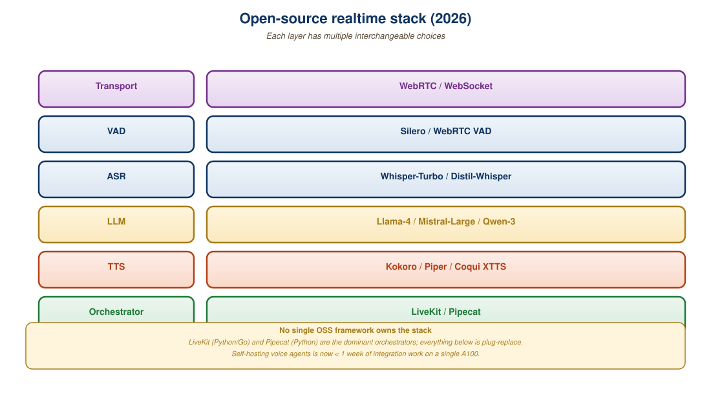

"The proprietary realtime APIs are great. They are also a single vendor with API price increases and a 30-minute session limit. Open source is the hedge."
Echo, Open-Realtime AI Agent
The open-source realtime stack in 2026 has three layers. At the model layer, Kyutai's Moshi is the foundational native audio-text model with full-duplex (simultaneous listen-and-speak) capability. At the orchestration layer, Pipecat and LiveKit Agents provide pipeline-style frameworks for composing ASR (Automatic Speech Recognition, the speech-to-text step), LLM, and TTS (Text-To-Speech, the speech-out step) into a streaming voice agent. At the transport layer, LiveKit and Daily handle WebRTC media routing (WebRTC is the browser-native low-latency audio/video protocol; "media routing" means relaying packets between participants with as little buffering as possible). This section walks through each piece, explains how they fit together, and provides a concrete recipe for an end-to-end open-source voice agent that hits sub-second TTFAT (Time To First Audio Token, the perceptual-latency metric that Section 40.4 defines: how long from end-of-user-speech until the model's first speech sample starts playing).
Prerequisites
This section assumes the closed-API realtime architecture from Section 40.3, the latency-budget vocabulary from Section 40.4, and the open-weights model zoo for speech and audio from Section 25.4.

40.5.1 Moshi: A Native Audio-Text Foundation Model
Kyutai released Moshi at a 2024 Paris press event by booting it live, asking the model to discuss French wine, and then deliberately interrupting it mid-sentence to see how it handled barge-in. The model paused, acknowledged the interruption, and continued. The lab's stated mission was "to open-source what OpenAI demos behind a paywall," and the entire weights, codec, and training code shipped publicly within weeks. Moshi remains the only frontier voice model in the open-weights tier whose name nobody can pronounce identically twice.
Kyutai's Moshi (Defossez et al., 2024) is the first widely-used open-weights native audio-text model. The technical novelty is full-duplex: the model has two parallel audio streams (one for each side of the conversation) and can speak while listening. This is a step beyond GPT-4o Realtime, which alternates turns.
Architecture highlights:
- Mimi codec: a 12.5 Hz neural codec producing 8 codebook tokens per frame, for ~100 audio tokens/sec/stream. Lower token rate than GPT-4o means cheaper inference.
- Hierarchical transformer: a "temporal" transformer over frames and a "depth" transformer over codebooks. This factorization keeps the per-step cost manageable.
- Inner monologue: the model emits a text stream alongside the audio stream, so you get a real-time transcript for free.
- Open weights: released under permissive license. The 7B variant runs at real-time on a single L4 GPU.
# Moshi inference via the kyutai-labs/moshi package.
# Full-duplex audio: user and model audio are concurrent streams.
from moshi import load_moshi
import torch, sounddevice as sd, numpy as np
model, mimi, tokenizer = load_moshi(
checkpoint="kyutai/moshiko-pytorch-bf16",
device="cuda",
)
FRAME = 1920 # 24kHz audio, 12.5Hz codec = 80ms frames
def run():
with sd.Stream(samplerate=24000, channels=1,
blocksize=FRAME) as stream:
user_tokens = []
model_tokens = []
while True:
# Read 80ms of microphone audio
audio, _ = stream.read(FRAME)
# Encode to user codec tokens
u_tok = mimi.encode(torch.from_numpy(audio).cuda())
user_tokens.append(u_tok)
# Model emits one frame of (audio tokens, text token) in response.
# Both streams advance concurrently; full-duplex.
m_tok, m_text = model.step(u_tok)
model_tokens.append(m_tok)
# Decode and play model audio
m_audio = mimi.decode(m_tok)
stream.write(m_audio.cpu().numpy())
# Real-time text transcript
if m_text:
print(tokenizer.decode(m_text), end="", flush=True)Half-duplex models (the default) treat conversation as alternating turns: the user speaks, then the model speaks. Full-duplex models can do both at once: backchanneling ("uh-huh", "mhm"), overlapping with the user's "yes!" before they finish, gracefully handling rapid-fire dialog. This is closer to how humans actually converse and dramatically improves the perceived naturalness. Moshi was the first open model to demonstrate this at production quality; expect commercial APIs to follow.
40.5.2 Pipecat: A Pipeline Framework for Voice Agents
Pipecat (Daily.co, 2024) is the most widely-used open-source framework for composing voice agent pipelines. The abstractions: a pipeline is a directed graph of processors that pass frames (audio chunks, transcripts, LLM tokens, TTS audio) through. The framework handles backpressure, error recovery, and observability.
# Pipecat pipeline: Daily transport, Deepgram STT,
# OpenAI GPT-4o-mini, Cartesia TTS. Voice agent in ~40 lines.
from pipecat.pipeline.pipeline import Pipeline
from pipecat.pipeline.task import PipelineTask
from pipecat.services.deepgram import DeepgramSTTService
from pipecat.services.openai import OpenAILLMService
from pipecat.services.cartesia import CartesiaTTSService
from pipecat.transports.services.daily import DailyTransport
transport = DailyTransport(room_url=URL, token=TOKEN, bot_name="Agent")
stt = DeepgramSTTService(api_key=DEEPGRAM_KEY)
llm = OpenAILLMService(api_key=OPENAI_KEY, model="gpt-4o-mini")
tts = CartesiaTTSService(api_key=CARTESIA_KEY, voice_id="79a125e8-...")
pipeline = Pipeline([
transport.input(), # Mic in from Daily room
stt, # Audio -> partial transcripts
llm, # Transcripts -> LLM tokens
tts, # LLM tokens -> audio
transport.output(), # Audio -> Daily room
])
task = PipelineTask(pipeline, params={"enable_metrics": True})
asyncio.run(task.run())Pipecat ships connectors for most production services: Deepgram, AssemblyAI, OpenAI, Anthropic, Cartesia, ElevenLabs, Replicate, Whisper, plus transport options (Daily, LiveKit, Twilio, WebRTC, WebSocket). Replacing any one piece is a one-line change. This makes Pipecat the right starting point for most open-source voice agent deployments in 2026.
40.5.3 LiveKit Agents
LiveKit Agents (LiveKit, 2024) is a similar framework with deeper WebRTC integration. LiveKit's heritage is real-time communication infrastructure (Zoom-style video rooms); the Agents framework adds AI participants that can join those rooms.
The conceptual model: a LiveKit room is a meeting; an agent is a participant in that room with the same audio I/O affordances as a human participant. The agent uses LiveKit's media servers for low-latency WebRTC transport across geographic regions.
- Strengths: best-in-class WebRTC performance, geographic scale (LiveKit Cloud has global media servers), native support for video as well as audio.
- Weaknesses: more opinionated about transport (LiveKit only); newer, smaller community than Pipecat.
The choice between Pipecat and LiveKit Agents is largely about transport: if you are deploying on a phone call (Twilio) or a custom WebSocket, use Pipecat. If you are building a video-call experience (e.g., a virtual interviewer or a tutoring widget), use LiveKit Agents.
40.5.4 Transport Layer: LiveKit, Daily, Twilio
The transport layer carries audio between the user device and the agent. Three production-grade choices:
| Provider | Protocol | Best Use Case | Pricing (early 2026) |
|---|---|---|---|
| LiveKit Cloud | WebRTC + LiveKit signaling | Video calls, multi-participant agents | ~$0.004 per participant-minute |
| Daily | WebRTC + Daily SDK | Browser-based agents, simple integration | ~$0.004 per participant-minute |
| Twilio Voice + Media Streams | SIP + WebSocket media | Phone call integration | ~$0.015 per minute |
| Plain WebSocket | WebSocket binary frames | Custom mobile apps, server-to-server | Self-hosted |
| Vapi | Managed voice infrastructure | Quick start, no own infra | ~$0.05 per minute (bundled) |
40.5.5 Deployment and Scaling
An open-source voice agent typically runs as a Python service in a container, one process per concurrent conversation. Scaling involves three considerations:
- GPU residency for self-hosted models: if you run Moshi or a self-hosted Whisper, you need GPUs warm and waiting. A single A10G can serve 2 to 4 concurrent Moshi conversations; a single H100 can serve 8 to 12. Use Modal (Section 9.5) or RunPod for elastic GPU pools.
- Network proximity: deploy near your users. LiveKit Cloud's global media servers handle this transparently; with self-hosted media, you need multi-region deployment.
- Concurrency limits: each conversation holds open sockets to ASR, LLM, TTS providers. Stay under the per-vendor rate limits or roll out across multiple API keys.
The cost crossover for self-hosted vs API depends on your concurrency profile. At low utilization (a few concurrent conversations per hour), API-based pipelines are radically cheaper because you pay only for actual usage. At high steady-state load (50+ concurrent conversations 24x7), self-hosted models on rented GPUs become cheaper per minute. The breakeven is typically around 10 to 20 concurrent conversations; below that, stay on APIs.
Beyond Moshi, the 2025-2026 open-source landscape includes:
- Hertz-dev: an 8B open audio-text model from Standard Intelligence with low latency on consumer GPUs.
- Llama-4-Omni: covered in Section 37.4; the open-weights GPT-4o competitor with realtime audio path.
- Mini-Omni 2: open audio-text-vision model with full-duplex capability.
- RT-Voice (formerly Whisper-Large-v3-Turbo): distilled Whisper variants that run at near-real-time on CPU.
The pattern: open models are catching up to proprietary ones with 6 to 12 months of lag. For applications where ownership, on-premises deployment, or fine-tuning matters more than absolute capability, the open stack is increasingly viable.
Who: A 2025 mental-health startup building a voice-based therapy companion subject to HIPAA-style data-handling rules.
Situation: The product needed a fully voice-driven agent, but the startup had committed to its clinician advisors that no user audio would leave its own infrastructure.
Problem: Every off-the-shelf low-latency voice stack (GPT-4o Realtime, Gemini Live) required shipping user audio to a major cloud provider, which the startup could not do.
Dilemma: Accept the proprietary realtime APIs' latency advantage and breach the privacy commitment, or stand up a self-hosted stack and absorb the engineering cost plus higher per-minute latency.
Decision: The team chose a fully self-hosted open stack, accepting higher latency in exchange for keeping all audio inside its own VPC.
How: The stack used Pipecat for orchestration, faster-whisper-large-v3 for ASR on a self-hosted A10G, an internally fine-tuned Llama-3.1-70B for the LLM, Kokoro for on-prem TTS, and LiveKit for WebRTC transport.
Result: Total per-conversation cost was around $0.18 per minute (mostly GPU rental) with about 1.1 s TTFAT, versus a GPT-4o Realtime baseline of around $0.50 per minute at 0.4 s TTFAT; the open stack was 3x cheaper, and the latency was acceptable for therapy-style turn-taking.
Lesson: When regulatory or privacy requirements forbid sending audio to a hyperscaler, the open self-hosted voice stack is the only option, and the latency penalty is usually tolerable for non-instant-response use cases.
The "free" in open-source means free of license fees, not free of engineering effort. A self-hosted voice agent typically requires 1 to 3 engineers to bring to production and 0.5 to 1 engineer to maintain. If you do not have those engineering resources, the proprietary realtime APIs are not just simpler, they are likely cheaper in total cost of ownership. Match the build-vs-buy decision to your team capacity, not to the per-minute API price.
The 2026 open-source realtime stack is production-ready but engineering-intensive. Moshi is the native audio-text foundation model with full-duplex capability; Pipecat and LiveKit Agents are the orchestration frameworks; LiveKit and Daily handle WebRTC transport. The open stack wins on privacy, ownership, and high steady-state cost; the proprietary realtime APIs win on simplicity, latency floor, and low-volume cost. Match the stack to your concurrency, compliance, and team-capacity profile.
Show Answer
Show Answer
Show Answer
Show Answer
What Comes Next
Chapter 39 closes here. The next chapters in Part VII (39, 40, 41) cover Vision-Language-Action models, LLM robotics, and world models, then we return to Chapter 33 for cross-modal retrieval-augmented generation.